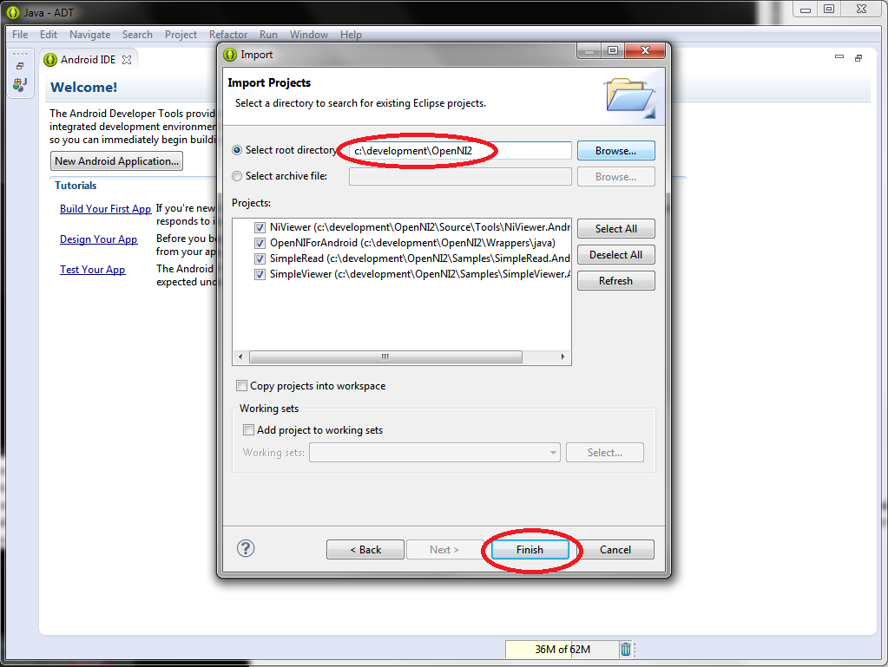

This document provides step by step instructions on how to compile and run the OpenNI for Android sample applications.
If you have any questions or require further assistance, contact Support@primesense.com .
The OpenNI for Android distribution consists of a set of libraries needed to access the PrimeSense sensor on an Android device, as well as four samples illustrating the capabilities of the SDK on this platform.
This document provides detailed instructions on how to load the sample projects into an Eclipse environment, compile them, and install the resulting binaries on an Android device.
No setup procedure is required for the Android tablet that will be used. This version of OpenNI for Android does not require root access on the device, or any sort of driver install outside of the libraries packed with each app that uses the sensor.
NOTE: Previous proof-of-concept Android SDK's released by PrimeSense are known to conflict with this release. If you have an older version of the SDK installed (ie, one that required you to root the device and place shared libraries into the Android system folder) It is important to remove that release from your tablet before continuing. The simplest way to do this is to reinstall the tablet OS to bring the "factory new" configuration back, or to start with a tablet that has never had PrimeSense software installed on it.
This tutorial assumes that you have a current version of Eclipse, as well as the Android ADT plug-in for Eclipse, and a current installation of the Android SDK. For instructions on setting up these tools see: For the Android SDK: http://developer.android.com/sdk/installing/index.html For Eclipse: http://www.eclipse.org/downloads/ For the Android ADT Plugin for Eclipse: http://developer.android.com/sdk/installing/installing-adt.html
This tutorial also assumes that you have an Android based tablet that includes USB host capabilities and a PrimeSense Carmine or Capri sensor, as well as the required drivers to connect the tablet to the Eclipse debug environment.
This tutorial was tested on Windows 7, with ADT Bundle version 22.2.0
and Android SDK Platform Tools Rev. 18. Hardware used was an ASUS Transformer Prime.
The SDK is provided as a single Android library. Enabling support for the sensor is a simple matter of including the "OpenNIAndroidLibrary" as a library dependency in the project for your Android app. The contents of the distribution must be available somewhere on the development machine so that the Android Tools can find them, but no additional SDK installation procedure is necessary on the host side.
When an Android project is built to use the sensor, the required libraries are included in the .apk file that is created. The required configuration files are also included in the project as assets.
Once you can build and install the sample applications that come with
the SDK, you are ready to begin development of Android applications
using OpenNI. The chapter in this document entitled "Building the
Samples in Eclipse" gives detailed instructions on how to do this.
A major design goal of this SDK was to enable communication with a PrimeSense device without need for root permissions in Android. This was accomplished by using the Android USB Host API which first became available at Android API level 12 (ie Android Honeycomb 3.1).
As part of the Android security infrastructure, application access to the USB port will require active user approval. This takes the form of a dialogue box that a user must click "okay" on. This interaction is a design feature of the Android operating system, not of the OpenNI SDK. It is not possible to avoid this interaction in an application if that application is to run on a non-rooted tablet.
All code necessary to obtain the user permissions, and use them to open up the sensor is encapsulated in the OpenNIHelper class.
The OpenNIAndroidLibrary contains two major classes that are
directly useful to developers, as well as a set of configuration files.
The OpenNI Android package is distributed as a single .tgz
archive. Unzip this distribution to any convenient location. This
tutorial shows the package unzipped to the root of the C drive, but any
location that you have read and write access to should work.
Once unzipped, you should have a single
top level folder called "OpenNI-Android-<version>". This folder
should contain the following subfolders: Assets, Documentation, Native
OpenNIAndroidLibrary, Samples and Tools. Make note of the location
of the top level "OpenNI-Android" folder, as it will be referenced
later in the tutorial.
In order to avoid any conflict with existing open projects in
Eclipse, we recommend that you create a new workspace for working with
the samples. Experienced users of Eclipse may choose to skip this step
based upon personal preference.
To create an empty workspace, start Eclipse, and select File->Switch Workspace -> Other (see Figure).
From
here, provide a unique directory name to store the workspace, and
select "OK". The path to your workspace directory will not match the
one in the figure, since you will have a different user name and
directory name.
After creating the new workspace, your screen should look like the figure below:
The samples are provided with Eclipse project files, so they simply
need to be imported. There are four samples, plus the support library.
To import the projects, select File->Import:
In the resulting dialogue box, select "Existing Projects Into Workspace" from the "General" category, and click "Next".
In
the next dialogue, enter the path to the top level OpenNI-Android
folder that you created in the first step. Four projects should appear
in the "Projects" box, as shown in the figure. You can now click
"Finish".

The simplest way to create an APK that you can install on the device is
to simply run the samples once in the Eclipse debugger. To do this:
This sample simply renders the depth map and the color video output
(or IR if color is not available) to the screen. Tap the screen to
switch between the two streams.
The purpose of this sample is to show
basic operation of the sensor with the tablet, and to provide a simple
source code example of how to open the camera, read a depth frame, and
render it to the screen.
This sample shows how to start a depth stream, read frames from it and access
a specific pixel in the frame.
NiViewer is intended to show capabilities of OpenNI. It allows choosing the stream
to view, choosing a video mode out of the list of supported ones, and recording.